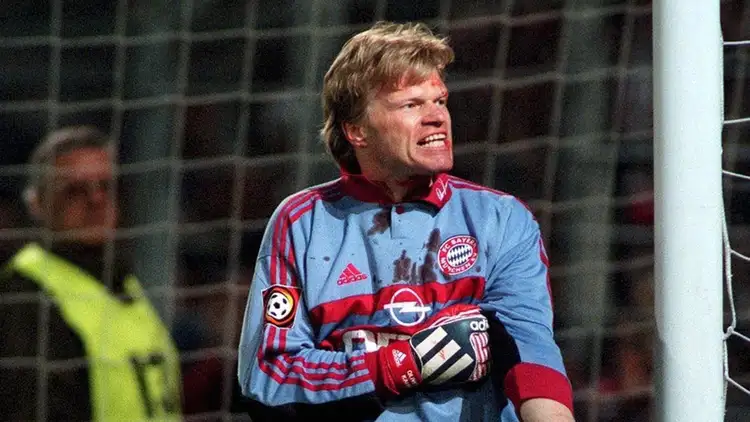
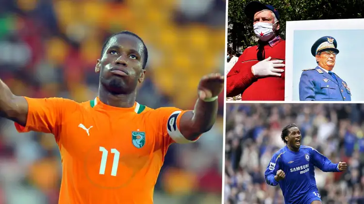

NOSTALGIA SEPAK BOLA
Kehancuran Manchester United dan David Beckham di Piala Dunia Antar Klub 2000
.jpg.webp)
Manchester United mungkin tidak terlibat dalam turnamen FIFA kali ini, tapi partisipasi mereka di edisi pertama tidak akan pernah terlupakan.
Pada awal Januari di awal milenium baru, biasanya Manchester United akan berlatih dalam suhu di bawah nol sambil bersiap untuk pertandingan putaran ketiga Piala FA. Namun, mereka berada di Brasil pada puncak musim panas untuk kejuaraan dunia klub FIFA perdana, yang saat itu dikenal sebagai Kejuaraan Dunia Antarklub.
Kisah Aneh Tapi Nyata: Andres Escobar Dan Gol Bunuh Diri Paling Tragis Dalam Sejarah Piala Dunia

Hampir 30 tahun yang lalu, seorang bintang Kolombia dibunuh secara brutal di kampung halamannya - dan inilah kisahnya...
Kisah Andres Escobar mungkin adalah salah satu kisah paling tragis yang pernah ada di sepakbola. Seorang bek bintang untuk tim nasional Kolombia dan raksasa Medellin Atletico Nacional, ia baru berusia 27 tahun ketika ditembak mati di tanah airnya setelah Piala Dunia 1994 di Amerika Serikat.
Escobar disalahkan atas ketersingkiran negaranya di babak grup. Gol bunuh diri yang ia ciptakan di paruh pertama saat kalah 2-1 dari AS di matchday kedua menimbulkan tantangan yang tidak dapat diatasi tim Amerika Selatan tersebut untuk tetap bertahan di kompetisi akbar, meski berhasil mengalahkan Swiss di matchday ketiga mereka.
Kurang dari seminggu setelah mereka tersingkir, Escobar dibunuh di luar kelab malam di Medellin. Pria yang kemudian ditangkap dan mengakui pembunuhan tersebut adalah Humberto Castro Munoz, seorang pengawal dan sopir dua pengedar narkoba terkenal di kota besar Kolombia dalam bentrokan lain antara sepakbola Kolombia dan bisnis kokain. Kedua dunia itu pada dasarnya telah bersatu seiring dengan semakin banyaknya kartel narkoba yang terlibat, dan olahraga ini dirusak lebih jauh oleh korupsi. Bahkan Atletico Nacional pernah didanai oleh raja narkoba terkenal dunia Pablo Escobar.
Oliver Kahn, Legenda Sejati Bayern Munich Idola Anak Era 90-an

Kahn merupakan salah satu penjaga gawang terhebat yang pernah ada tak hanya di Jerman tapi juga dunia.
Salah satu pemain palik ikonik dari generasinya, idola kebanyakan anak dari era 1990-an, namanya adalah Oliver Kahn.
Secara individu, ia dinobatkan sebagai Pemain Terbaik Jerman pada 2000 dan 2001, dan menempati peringkat ketiga dalam pemilihan Ballon d'Or pada 2001 dan 2002. Rekornya dengan total 204 clean sheet di Bundesliga masih belum ada tandingannya sampai saat ini.
Ketika Magis Didier Drogba Mampu Hentikan Perang Saudara Di Pantai Gading | Goal.com Indonesia

Didier Drogba bukan hanya sekedar legenda sepak bola, tapi juga sosok penting dalam sejarah perdamaian di negaranya, Pantai Gading. Pada 2005, setelah membawa timnas lolos ke Piala Dunia untuk pertama kalinya, Drogba memanfaatkan momen tersebut untuk menyerukan perdamaian di tengah perang saudara yang telah berlangsung sejak 2002. Bersama rekan-rekannya, ia berlutut di depan kamera dan memohon rakyat untuk menghentikan konflik serta meletakkan senjata, menegaskan bahwa seluruh rakyat bisa bersatu sebagai satu bangsa.
Seruan emosional itu berdampak besar, hingga akhirnya mendorong kedua pihak yang bertikai untuk memulai pembicaraan damai dan mencapai gencatan senjata. Setahun kemudian, pertandingan timnas bahkan digelar di wilayah pemberontak sebagai simbol persatuan, yang semakin mempererat kembali masyarakat Pantai Gading. Kisah ini membuat Didier Drogba dikenang bukan hanya sebagai pemain hebat, tetapi juga sebagai sosok yang mampu membawa perubahan nyata di luar lapangan.